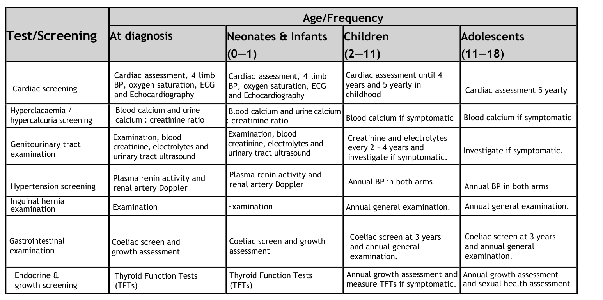

Williams syndrome (Williams-Beuren syndrome) is a rare multisystem neurodevelopmental disorder caused by a recurrent ~1.5-1.8 Mb contiguous-gene microdeletion at chromosome 7q11.23 that removes approximately 26-28 genes, including ELN (elastin). Hemizygous loss of ELN produces a generalized elastin arteriopathy, most characteristically supravalvular aortic stenosis, while haploinsufficiency of additional genes in the deleted interval (including GTF2I, GTF2IRD1, LIMK1, BAZ1B, and CLIP2) contributes to the distinctive cognitive-behavioral profile, craniofacial features, and connective-tissue and endocrine abnormalities. Affected individuals show a characteristic personality with overfriendliness and high sociability, intellectual disability with relative strengths in verbal and social domains and marked weakness in visuospatial construction, infantile hypercalcemia, and distinctive facial features.
Ask a research question about Williams Syndrome. OpenScientist will conduct autonomous deep research using the Disorder Mechanisms Knowledge Base and PubMed literature (typically 10-30 minutes).
Do not include personal health information in your question. Questions and results are cached in your browser's local storage.
name: Williams Syndrome
creation_date: "2026-06-03T00:00:00Z"
synonyms:
- Williams-Beuren syndrome
- WBS
- deletion 7q11.23
description: >-
Williams syndrome (Williams-Beuren syndrome) is a rare multisystem
neurodevelopmental disorder caused by a recurrent ~1.5-1.8 Mb contiguous-gene
microdeletion at chromosome 7q11.23 that removes approximately 26-28 genes,
including ELN (elastin). Hemizygous loss of ELN produces a generalized
elastin arteriopathy, most characteristically supravalvular aortic stenosis,
while haploinsufficiency of additional genes in the deleted interval
(including GTF2I, GTF2IRD1, LIMK1, BAZ1B, and CLIP2) contributes to the
distinctive cognitive-behavioral profile, craniofacial features, and
connective-tissue and endocrine abnormalities. Affected individuals show a
characteristic personality with overfriendliness and high sociability,
intellectual disability with relative strengths in verbal and social domains
and marked weakness in visuospatial construction, infantile hypercalcemia,
and distinctive facial features.
category: Mendelian
parents:
- Chromosomal microdeletion syndrome
- Congenital heart disease
- Neurodevelopmental disorder
disease_term:
preferred_term: Williams syndrome
term:
id: MONDO:0008678
label: Williams syndrome
references:
- reference: PMID:20301427
title: "Williams Syndrome."
tags:
- GeneReviews
- reference: PMID:34140529
title: "Williams syndrome."
- reference: PMID:36168091
title: "Clinical phenotypes study of 231 children with Williams syndrome in China: A single-center retrospective study."
- reference: PMID:35760456
title: "Novel ophthalmic findings and deep phenotyping in Williams-Beuren syndrome."
- reference: PMID:39007270
title: "Multiscale modeling uncovers 7q11.23 copy number variation-dependent changes in ribosomal biogenesis and neuronal maturation and excitability."
- reference: PMID:37633900
title: "Dorsal visual stream and LIMK1: hemideletion, haplotype, and enduring effects in children with Williams syndrome."
- reference: PMID:15150772
title: "Risk of sudden death in the Williams-Beuren syndrome."
- reference: PMID:25791950
title: "Adverse cardiac events in children with Williams syndrome undergoing cardiovascular surgery: An analysis of the Society of Thoracic Surgeons Congenital Heart Surgery Database."
inheritance:
- name: Autosomal dominant inheritance
description: >-
Williams syndrome is inherited in an autosomal dominant manner. The vast
majority of cases arise de novo from a recurrent 7q11.23 deletion mediated
by non-allelic homologous recombination between flanking low-copy repeats;
affected individuals have a 50% chance of transmitting the deletion.
inheritance_term:
preferred_term: autosomal dominant inheritance
term:
id: HP:0000006
label: Autosomal dominant inheritance
evidence:
- reference: PMID:20301427
reference_title: "Williams Syndrome."
supports: SUPPORT
evidence_source: HUMAN_CLINICAL
snippet: >-
WS is an autosomal dominant disorder. Most individuals diagnosed with WS
have the disorder as the result of a de novo 1.5- to 1.8-Mb 7q11.23
deletion; rarely, an individual with WS has an affected parent.
explanation: >-
GeneReviews confirms autosomal dominant inheritance with predominantly
de novo origin of the 7q11.23 deletion.
genetic:
- name: ELN haploinsufficiency from 7q11.23 deletion
notes: >-
Hemizygous deletion of ELN (elastin) at 7q11.23 causes elastin
haploinsufficiency, the basis of the generalized arteriopathy and
connective-tissue manifestations of Williams syndrome.
gene_term:
preferred_term: ELN
term:
id: hgnc:3327
label: ELN
evidence:
- reference: PMID:20301427
reference_title: "Williams Syndrome."
supports: SUPPORT
evidence_source: HUMAN_CLINICAL
snippet: >-
The diagnosis of WS is established by identification of a heterozygous
1.5- to 1.8-Mb deletion of the Williams-Beuren syndrome critical region
(WBSCR) on chromosome 7q11.23.
explanation: >-
GeneReviews establishes the diagnostic 7q11.23 deletion (which includes
ELN) as the molecular basis of Williams syndrome.
pathophysiology:
- name: ELN Haploinsufficiency and Elastin Arteriopathy
description: >-
Hemizygous loss of ELN within the 7q11.23 deletion reduces elastin
available for elastic fiber assembly in the arterial wall. Deficient
elastin disrupts the normal elastin-driven quiescence of vascular smooth
muscle cells, leading to compensatory smooth muscle cell proliferation,
medial thickening, and luminal narrowing. The result is a generalized
arteriopathy with a predilection for the aortic root, producing
supravalvular aortic stenosis and peripheral pulmonary artery stenosis.
cell_types:
- preferred_term: Vascular smooth muscle cell
term:
id: CL:0000359
label: vascular associated smooth muscle cell
- preferred_term: Endothelial cell
term:
id: CL:0000115
label: endothelial cell
biological_processes:
- preferred_term: Elastic fiber assembly
term:
id: GO:0048251
label: elastic fiber assembly
modifier: DECREASED
- preferred_term: Extracellular matrix organization
term:
id: GO:0030198
label: extracellular matrix organization
modifier: ABNORMAL
- preferred_term: Smooth muscle cell proliferation
term:
id: GO:0048659
label: smooth muscle cell proliferation
modifier: INCREASED
evidence:
- reference: PMID:34140529
reference_title: "Williams syndrome."
supports: SUPPORT
evidence_source: HUMAN_CLINICAL
snippet: >-
Genotype-phenotype evidence is strongest for ELN, the gene
encoding elastin, which is responsible for the vascular and connective tissue
features of WS
explanation: >-
The 2021 Nature Reviews Disease Primers expert review attributes the
vascular and connective-tissue features of Williams syndrome to ELN
(elastin) haploinsufficiency, supporting the elastin-arteriopathy mechanism.
- reference: clinicaltrials:NCT00876200
reference_title: "The Efficacy of Minoxidil in Children With Williams-Beuren Syndrome: a Randomized Clinical Trial."
supports: SUPPORT
evidence_source: OTHER
snippet: >-
Elastin, which is part of the extracellular matrix, controls proliferation
of vascular smooth muscle cells (VSMCs) and stabilizes arterial structure.
explanation: >-
The minoxidil trial rationale (trial-registry background, not primary
study data) describes the elastin-VSMC mechanism: elastin restrains
vascular smooth muscle cell proliferation and stabilizes the arterial
wall, so elastin loss drives the arteriopathy.
- reference: PMID:15150772
reference_title: "Risk of sudden death in the Williams-Beuren syndrome."
supports: SUPPORT
evidence_source: HUMAN_CLINICAL
snippet: >-
Thus, the incidence of sudden death in our WBS cohort
amounts to 1/1,000 patient years. This risk of sudden death is comparable to
that following surgery for congenital heart disease, and is 25-100-fold higher
compared to the age-matched normal population.
explanation: >-
A cohort of 293 WBS patients (5,190 patient-years) found a sudden-death
incidence of ~1/1,000 patient-years, 25-100-fold above the age-matched
population, a downstream consequence of the elastin arteriopathy
(particularly coronary involvement).
- name: Contiguous-Gene Neurocognitive Mechanism
description: >-
Haploinsufficiency of additional genes within the 7q11.23 deletion
interval contributes to the Williams syndrome neurocognitive and behavioral
profile. GTF2I and GTF2IRD1 are strongly implicated in the hypersociability
and craniofacial features, while LIMK1 (a regulator of actin cytoskeletal
dynamics) has been linked to the impaired visuospatial construction. The
combined dosage effect produces intellectual disability with a
characteristic dissociation between relatively preserved language and
severely impaired visuospatial cognition.
cell_types:
- preferred_term: Neuron
term:
id: CL:0000540
label: neuron
biological_processes:
- preferred_term: Actin cytoskeleton organization
term:
id: GO:0030036
label: actin cytoskeleton organization
modifier: ABNORMAL
evidence:
- reference: PMID:34140529
reference_title: "Williams syndrome."
supports: SUPPORT
evidence_source: HUMAN_CLINICAL
snippet: >-
for the transcription factor genes GTF2I and GTF2IRD1, which
are known to affect intellectual ability, social functioning and anxiety
explanation: >-
The expert review attributes the cognitive, social, and anxiety phenotypes
of Williams syndrome to haploinsufficiency of the transcription-factor
genes GTF2I and GTF2IRD1 in the deleted interval.
- reference: PMID:37633900
reference_title: "Dorsal visual stream and LIMK1: hemideletion, haplotype, and enduring effects in children with Williams syndrome."
supports: SUPPORT
evidence_source: HUMAN_CLINICAL
snippet: >-
We investigated the impacts of hemideletion and haplotype variation of LIMK1, a
gene hemideleted in WS and linked to neuronal maturation and migration, on the
structure and function of the dorsal stream
explanation: >-
Longitudinal MRI study links LIMK1 hemideletion to dorsal visual stream
(intraparietal sulcus) anomalies underlying the visuospatial construction
deficit characteristic of Williams syndrome.
- name: Dosage-Sensitive mTOR and Ribosomal Dysregulation
description: >-
Multi-omics modeling of patient-derived and isogenic induced neurons shows
that 7q11.23 copy-number dosage produces symmetrically opposite changes in
neuronal differentiation and intrinsic excitability between Williams syndrome
(deletion) and the reciprocal 7q11.23 duplication. The hemideletion is
associated with dysregulation of the mTOR pathway (downregulated
phosphorylated RPS6) and of ribosomal biogenesis, providing a candidate
mechanistically actionable relay linking gene dosage to altered neuronal
maturation.
cell_types:
- preferred_term: Induced neuron
term:
id: CL:0000540
label: neuron
biological_processes:
- preferred_term: Regulation of TOR signaling
term:
id: GO:0032006
label: regulation of TOR signaling
modifier: ABNORMAL
- preferred_term: Ribosome biogenesis
term:
id: GO:0042254
label: ribosome biogenesis
modifier: ABNORMAL
evidence:
- reference: PMID:39007270
reference_title: "Multiscale modeling uncovers 7q11.23 copy number variation-dependent changes in ribosomal biogenesis and neuronal maturation and excitability."
supports: SUPPORT
evidence_source: IN_VITRO
snippet: >-
Consistently, we found phosphorylated RPS6
(p-RPS6) downregulated in WBS and upregulated in 7Dup.
explanation: >-
Patient-derived and isogenic induced-neuron modeling shows dosage-sensitive
mTOR pathway dysregulation (downregulated p-RPS6) in Williams-Beuren
syndrome, a candidate neurodevelopmental mechanism.
phenotypes:
- category: Cardiovascular
name: Supravalvular Aortic Stenosis
description: >-
Narrowing of the aorta just above the aortic valve, the most characteristic
cardiovascular lesion of Williams syndrome, resulting directly from elastin
arteriopathy.
phenotype_term:
preferred_term: Supravalvular aortic stenosis
term:
id: HP:0004381
label: Supravalvular aortic stenosis
evidence:
- reference: PMID:20301427
reference_title: "Williams Syndrome."
supports: SUPPORT
evidence_source: HUMAN_CLINICAL
snippet: >-
cardiovascular disease (supravalvar aortic stenosis, peripheral pulmonary
stenosis, hypertension)
explanation: >-
GeneReviews lists supravalvar aortic stenosis as a core cardiovascular
feature of Williams syndrome.
- reference: PMID:34140529
reference_title: "Williams syndrome."
supports: SUPPORT
evidence_source: HUMAN_CLINICAL
snippet: >-
cardinal features including but not limited to cardiovascular disease
(characteristically stenosis of the great arteries and most notably supravalvar
aortic stenosis)
explanation: >-
The expert review identifies supravalvar aortic stenosis as the most
characteristic cardiovascular cardinal feature of Williams syndrome.
- category: Cardiovascular
name: Peripheral Pulmonary Artery Stenosis
description: >-
Narrowing of the peripheral pulmonary arteries, another manifestation of
the generalized elastin arteriopathy, often present in infancy and may
improve over time.
phenotype_term:
preferred_term: Peripheral pulmonary artery stenosis
term:
id: HP:0004969
label: Peripheral pulmonary artery stenosis
evidence:
- reference: PMID:20301427
reference_title: "Williams Syndrome."
supports: SUPPORT
evidence_source: HUMAN_CLINICAL
snippet: >-
cardiovascular disease (supravalvar aortic stenosis, peripheral pulmonary
stenosis, hypertension)
explanation: >-
GeneReviews lists peripheral pulmonary stenosis as a core cardiovascular
feature of Williams syndrome.
- category: Cardiovascular
name: Hypertension
description: >-
Arterial hypertension is common across the lifespan in Williams syndrome,
related to diffuse arteriopathy and, in some cases, renal artery stenosis.
phenotype_term:
preferred_term: Hypertension
term:
id: HP:0000822
label: Hypertension
evidence:
- reference: PMID:20301427
reference_title: "Williams Syndrome."
supports: SUPPORT
evidence_source: HUMAN_CLINICAL
snippet: >-
cardiovascular disease (supravalvar aortic stenosis, peripheral pulmonary
stenosis, hypertension)
explanation: >-
GeneReviews lists hypertension among the core cardiovascular features of
Williams syndrome.
- category: Neurologic
name: Intellectual Disability
description: >-
Most individuals have mild to moderate intellectual disability with a
distinctive cognitive profile featuring relative strength in verbal and
auditory rote skills and marked weakness in visuospatial construction.
phenotype_term:
preferred_term: Intellectual disability
term:
id: HP:0001249
label: Intellectual disability
evidence:
- reference: PMID:20301427
reference_title: "Williams Syndrome."
supports: SUPPORT
evidence_source: HUMAN_CLINICAL
snippet: >-
Williams syndrome (WS) is characterized by developmental delay,
intellectual disability (usually mild), a specific cognitive profile,
unique personality characteristics
explanation: >-
GeneReviews documents intellectual disability (usually mild) with a
specific cognitive profile as a core feature.
- reference: PMID:34140529
reference_title: "Williams syndrome."
supports: SUPPORT
evidence_source: HUMAN_CLINICAL
snippet: >-
a specific
cognitive and behavioural profile that includes intellectual disability and
hypersociability
explanation: >-
The expert review confirms intellectual disability as part of the specific
cognitive-behavioral profile of Williams syndrome.
- category: Neurologic
name: Generalized Hypotonia
description: >-
Infantile hypotonia is common and contributes to feeding difficulties and
motor delay in early childhood.
phenotype_term:
preferred_term: Generalized hypotonia
term:
id: HP:0001290
label: Generalized hypotonia
evidence:
- reference: PMID:20301427
reference_title: "Williams Syndrome."
supports: SUPPORT
evidence_source: HUMAN_CLINICAL
snippet: >-
Hypotonia and hyperextensible joints can result in delayed attainment of
motor milestones.
explanation: >-
GeneReviews documents hypotonia contributing to delayed motor milestones.
- category: Behavioral
name: Overfriendliness
description: >-
A hallmark of the Williams syndrome personality is excessive sociability
and overfriendliness toward strangers, part of the unique personality
profile that distinguishes the disorder.
phenotype_term:
preferred_term: Overfriendliness
term:
id: HP:0100025
label: Overfriendliness
evidence:
- reference: PMID:20301427
reference_title: "Williams Syndrome."
supports: SUPPORT
evidence_source: HUMAN_CLINICAL
snippet: >-
Williams syndrome (WS) is characterized by developmental delay,
intellectual disability (usually mild), a specific cognitive profile,
unique personality characteristics
explanation: >-
GeneReviews documents the unique personality characteristics; overfriendliness
toward strangers is the hallmark personality feature of Williams syndrome.
- reference: PMID:37633900
reference_title: "Dorsal visual stream and LIMK1: hemideletion, haplotype, and enduring effects in children with Williams syndrome."
supports: SUPPORT
evidence_source: HUMAN_CLINICAL
snippet: >-
Clinically, WS is
typified by increased social drive (often termed "hypersociability") and severe
visuospatial construction deficits.
explanation: >-
The study explicitly characterizes Williams syndrome by increased social
drive ("hypersociability"), directly supporting the overfriendliness
phenotype.
- category: Behavioral
name: Attention Deficit Hyperactivity Disorder
description: >-
Attention-deficit/hyperactivity disorder is common in Williams syndrome and
is a frequent target of behavioral and pharmacologic management.
phenotype_term:
preferred_term: Attention deficit hyperactivity disorder
term:
id: HP:0007018
label: Attention deficit hyperactivity disorder
evidence:
- reference: PMID:20301427
reference_title: "Williams Syndrome."
supports: SUPPORT
evidence_source: HUMAN_CLINICAL
snippet: >-
individualized behavioral counseling and medications, especially for
attention-deficit/hyperactivity disorder and anxiety
explanation: >-
GeneReviews identifies ADHD as a frequent behavioral manifestation
requiring management in Williams syndrome.
- category: Behavioral
name: Anxiety
description: >-
Generalized and specific anxiety (including phobias) is highly prevalent in
Williams syndrome despite the characteristic overfriendly social drive.
phenotype_term:
preferred_term: Anxiety
term:
id: HP:0000739
label: Anxiety
evidence:
- reference: PMID:20301427
reference_title: "Williams Syndrome."
supports: SUPPORT
evidence_source: HUMAN_CLINICAL
snippet: >-
individualized behavioral counseling and medications, especially for
attention-deficit/hyperactivity disorder and anxiety
explanation: >-
GeneReviews identifies anxiety as a frequent behavioral manifestation
requiring management in Williams syndrome.
- category: Endocrine
name: Hypercalcemia
description: >-
Idiopathic infantile hypercalcemia is a recognized feature, often transient,
and can cause irritability, vomiting, and constipation in infancy.
phenotype_term:
preferred_term: Hypercalcemia
term:
id: HP:0003072
label: Hypercalcemia
evidence:
- reference: PMID:20301427
reference_title: "Williams Syndrome."
supports: SUPPORT
evidence_source: HUMAN_CLINICAL
snippet: >-
endocrine abnormalities (early puberty, hypercalcemia, hypercalciuria,
hypothyroidism)
explanation: >-
GeneReviews lists hypercalcemia among the endocrine abnormalities of
Williams syndrome.
- category: Endocrine
name: Hypercalciuria
description: >-
Excess urinary calcium excretion is common, may accompany hypercalcemia,
and predisposes to nephrocalcinosis.
phenotype_term:
preferred_term: Hypercalciuria
term:
id: HP:0002150
label: Hypercalciuria
evidence:
- reference: PMID:20301427
reference_title: "Williams Syndrome."
supports: SUPPORT
evidence_source: HUMAN_CLINICAL
snippet: >-
endocrine abnormalities (early puberty, hypercalcemia, hypercalciuria,
hypothyroidism)
explanation: >-
GeneReviews lists hypercalciuria among the endocrine abnormalities of
Williams syndrome.
- category: Endocrine
name: Precocious Puberty
description: >-
Early puberty is a recognized endocrine manifestation and may be treated
with a gonadotropin-releasing hormone agonist.
phenotype_term:
preferred_term: Precocious puberty
term:
id: HP:0000826
label: Precocious puberty
evidence:
- reference: PMID:20301427
reference_title: "Williams Syndrome."
supports: SUPPORT
evidence_source: HUMAN_CLINICAL
snippet: >-
endocrine abnormalities (early puberty, hypercalcemia, hypercalciuria,
hypothyroidism)
explanation: >-
GeneReviews lists early puberty among the endocrine abnormalities of
Williams syndrome.
- category: Endocrine
name: Hypothyroidism
description: >-
Hypothyroidism occurs in Williams syndrome and warrants periodic thyroid
function surveillance.
phenotype_term:
preferred_term: Hypothyroidism
term:
id: HP:0000821
label: Hypothyroidism
evidence:
- reference: PMID:20301427
reference_title: "Williams Syndrome."
supports: SUPPORT
evidence_source: HUMAN_CLINICAL
snippet: >-
endocrine abnormalities (early puberty, hypercalcemia, hypercalciuria,
hypothyroidism)
explanation: >-
GeneReviews lists hypothyroidism among the endocrine abnormalities of
Williams syndrome.
- category: Gastrointestinal
name: Feeding Difficulties
description: >-
Feeding difficulties in infancy often lead to poor weight gain and may
benefit from feeding therapy.
phenotype_term:
preferred_term: Feeding difficulties in infancy
term:
id: HP:0008872
label: Feeding difficulties in infancy
evidence:
- reference: PMID:20301427
reference_title: "Williams Syndrome."
supports: SUPPORT
evidence_source: HUMAN_CLINICAL
snippet: >-
Feeding difficulties often lead to poor weight gain in infancy.
explanation: >-
GeneReviews documents infantile feeding difficulties leading to poor
weight gain.
- category: Gastrointestinal
name: Constipation
description: >-
Constipation is common across all ages in Williams syndrome and requires
aggressive management.
phenotype_term:
preferred_term: Constipation
term:
id: HP:0002019
label: Constipation
evidence:
- reference: PMID:20301427
reference_title: "Williams Syndrome."
supports: SUPPORT
evidence_source: HUMAN_CLINICAL
snippet: >-
Constipation should be aggressively managed at all ages.
explanation: >-
GeneReviews highlights constipation as a recurrent manifestation
requiring management at all ages.
- category: Musculoskeletal
name: Joint Hypermobility
description: >-
Joint laxity and hypermobility, a connective-tissue manifestation of
elastin deficiency, are frequent in younger individuals; contractures may
develop with age.
phenotype_term:
preferred_term: Joint hypermobility
term:
id: HP:0001382
label: Joint hypermobility
evidence:
- reference: PMID:20301427
reference_title: "Williams Syndrome."
supports: SUPPORT
evidence_source: HUMAN_CLINICAL
snippet: >-
Hypotonia and hyperextensible joints can result in delayed attainment of
motor milestones.
explanation: >-
GeneReviews documents hyperextensible joints, a connective-tissue
manifestation of elastin deficiency.
- category: Craniofacial
name: Long Philtrum
description: >-
A long philtrum is part of the distinctive "elfin" facial gestalt of
Williams syndrome.
phenotype_term:
preferred_term: Long philtrum
term:
id: HP:0000343
label: Long philtrum
evidence:
- reference: PMID:36168091
reference_title: "Clinical phenotypes study of 231 children with Williams syndrome in China: A single-center retrospective study."
supports: SUPPORT
evidence_source: HUMAN_CLINICAL
snippet: >-
All WS exhibited facial dysmorphism (100.0%).
explanation: >-
Long philtrum is a component of the distinctive facial dysmorphism that
was present in all 231 children with Williams syndrome in this cohort.
- category: Craniofacial
name: Periorbital Fullness
description: >-
Periorbital fullness with full cheeks contributes to the characteristic
facial appearance.
phenotype_term:
preferred_term: Periorbital fullness
term:
id: HP:0000629
label: Periorbital fullness
evidence:
- reference: PMID:36168091
reference_title: "Clinical phenotypes study of 231 children with Williams syndrome in China: A single-center retrospective study."
supports: SUPPORT
evidence_source: HUMAN_CLINICAL
snippet: >-
All WS exhibited facial dysmorphism (100.0%).
explanation: >-
Periorbital fullness is part of the characteristic facial dysmorphism that
was present in all 231 children with Williams syndrome in this cohort.
- category: Hearing
name: Hyperacusis
description: >-
Heightened sensitivity to sound (hyperacusis) is very common and often
distressing in Williams syndrome.
phenotype_term:
preferred_term: Hyperacusis
term:
id: HP:0010780
label: Hyperacusis
- category: Dental
name: Dental Malocclusion
description: >-
Malocclusion is common in Williams syndrome and frequently warrants
orthodontic management.
phenotype_term:
preferred_term: Dental malocclusion
term:
id: HP:0000689
label: Dental malocclusion
evidence:
- reference: PMID:20301427
reference_title: "Williams Syndrome."
supports: SUPPORT
evidence_source: HUMAN_CLINICAL
snippet: >-
Orthodontic referral
should be considered for malocclusion.
explanation: >-
GeneReviews recommends orthodontic referral for malocclusion as a
recognized dental manifestation of Williams syndrome.
- category: Growth
name: Short Stature
description: >-
Growth deficiency with short stature is a recognized feature of Williams
syndrome and was present in roughly half of a large pediatric cohort,
decreasing in relative frequency with age.
phenotype_term:
preferred_term: Short stature
term:
id: HP:0004322
label: Short stature
frequency: FREQUENT
evidence:
- reference: PMID:36168091
reference_title: "Clinical phenotypes study of 231 children with Williams syndrome in China: A single-center retrospective study."
supports: SUPPORT
evidence_source: HUMAN_CLINICAL
snippet: >-
The incidence of short stature (46.9%), inguinal hernia
(47.2%), hypercalciuria (29.10%), hypercalcemia (9.1%)
explanation: >-
A single-center cohort of 231 children with Williams syndrome reported
short stature in 46.9%, supporting a FREQUENT (30-79%) classification.
- category: Otolaryngologic
name: Hoarse Voice
description: >-
A hoarse or low-pitched voice is a common feature, attributed to
connective-tissue (elastin) abnormalities of the vocal folds, and was one of
the most frequent phenotypes in a large pediatric cohort.
phenotype_term:
preferred_term: Hoarse voice
term:
id: HP:0001609
label: Hoarse voice
frequency: VERY_FREQUENT
evidence:
- reference: PMID:36168091
reference_title: "Clinical phenotypes study of 231 children with Williams syndrome in China: A single-center retrospective study."
supports: SUPPORT
evidence_source: HUMAN_CLINICAL
snippet: >-
The majority had
neurodevelopmental disorder (91.8%), hoarseness (87.4%) and cardiovascular
anomalies (85.7%).
explanation: >-
Hoarseness was present in 87.4% of 231 children with Williams syndrome,
supporting a VERY_FREQUENT (80-100%) classification.
- category: Ophthalmologic
name: Stellate Iris
description: >-
A stellate (star-like) iris pattern is a characteristic ocular feature of
Williams syndrome, observed in just over half of patients in a deep
phenotyping study and not seen in isolated elastin-mediated SVAS.
phenotype_term:
preferred_term: Stellate iris
term:
id: HP:0012775
label: Stellate iris
frequency: FREQUENT
evidence:
- reference: PMID:35760456
reference_title: "Novel ophthalmic findings and deep phenotyping in Williams-Beuren syndrome."
supports: SUPPORT
evidence_source: HUMAN_CLINICAL
snippet: >-
Stellate iris
and retinal arteriolar tortuosity were noted in 30 (52.6%) and 51 (89.5%) WBS
patients, respectively.
explanation: >-
Deep ophthalmic phenotyping of 57 Williams-Beuren syndrome patients found
stellate iris in 52.6%, supporting a FREQUENT classification.
- category: Ophthalmologic
name: Retinal Arteriolar Tortuosity
description: >-
Tortuosity of the retinal arterioles is a very common ocular vascular
finding in Williams syndrome and may reflect the systemic elastin
arteriopathy in the retinal vasculature.
phenotype_term:
preferred_term: Retinal arteriolar tortuosity
term:
id: HP:0001136
label: Retinal arteriolar tortuosity
frequency: VERY_FREQUENT
evidence:
- reference: PMID:35760456
reference_title: "Novel ophthalmic findings and deep phenotyping in Williams-Beuren syndrome."
supports: SUPPORT
evidence_source: HUMAN_CLINICAL
snippet: >-
Stellate iris
and retinal arteriolar tortuosity were noted in 30 (52.6%) and 51 (89.5%) WBS
patients, respectively.
explanation: >-
Retinal arteriolar tortuosity was present in 89.5% of patients in the deep
phenotyping cohort, supporting a VERY_FREQUENT classification.
- category: Renal
name: Nephrocalcinosis
description: >-
Nephrocalcinosis can develop in Williams syndrome, related to hypercalcemia
and hypercalciuria, and warrants nephrology referral and renal imaging
surveillance.
phenotype_term:
preferred_term: Nephrocalcinosis
term:
id: HP:0000121
label: Nephrocalcinosis
evidence:
- reference: PMID:20301427
supports: SUPPORT
evidence_source: HUMAN_CLINICAL
snippet: >-
refer to a nephrologist for management of
nephrocalcinosis, persistent hypercalcemia, and/or hypercalciuria.
explanation: >-
GeneReviews documents nephrocalcinosis as a renal complication requiring
nephrology management in Williams syndrome.
- category: Neurologic
name: Global Developmental Delay
description: >-
Developmental delay across motor and language domains is identified in
infancy and childhood and is among the most common manifestations in
pediatric cohorts.
phenotype_term:
preferred_term: Global developmental delay
term:
id: HP:0001263
label: Global developmental delay
frequency: VERY_FREQUENT
evidence:
- reference: PMID:36168091
reference_title: "Clinical phenotypes study of 231 children with Williams syndrome in China: A single-center retrospective study."
supports: SUPPORT
evidence_source: HUMAN_CLINICAL
snippet: >-
The majority had
neurodevelopmental disorder (91.8%), hoarseness (87.4%) and cardiovascular
anomalies (85.7%).
explanation: >-
Neurodevelopmental disorder was present in 91.8% of 231 children with
Williams syndrome, supporting a VERY_FREQUENT classification of
developmental delay.
treatments:
- name: Cardiovascular Surgery for Supravalvular Aortic Stenosis
description: >-
Surgical repair of clinically significant supravalvular aortic stenosis or
other arterial stenoses to relieve obstruction. Anesthesia consultation and
electrocardiogram are recommended prior to sedation and surgical procedures
given the elevated peri-procedural cardiovascular risk.
treatment_term:
preferred_term: Surgical Procedure
term:
id: NCIT:C15329
label: Surgical Procedure
evidence:
- reference: PMID:20301427
reference_title: "Williams Syndrome."
supports: SUPPORT
evidence_source: HUMAN_CLINICAL
snippet: >-
Surgery may be required for supravalvar aortic or pulmonary artery
stenosis, mitral valve insufficiency, and/or renal artery stenosis.
explanation: >-
GeneReviews indicates surgical repair may be required for supravalvar
aortic stenosis and other vascular lesions in Williams syndrome.
- reference: PMID:25791950
reference_title: "Adverse cardiac events in children with Williams syndrome undergoing cardiovascular surgery: An analysis of the Society of Thoracic Surgeons Congenital Heart Surgery Database."
supports: SUPPORT
evidence_source: HUMAN_CLINICAL
snippet: >-
In this multicenter analysis, MACE occurred in 9% of patients with
WS undergoing cardiac surgery.
explanation: >-
A Society of Thoracic Surgeons database analysis quantifies the elevated
peri-procedural risk: major adverse cardiac events occurred in 9% of
Williams syndrome patients undergoing cardiovascular surgery, with higher
risk in coronary repair, underscoring the need for careful perioperative
planning.
- name: Calcium and Vitamin D Management
description: >-
Dietary modification to manage hypercalcemia, with severe cases treated
with oral corticosteroids and/or intravenous pamidronate. Agents to avoid:
pediatric multivitamins should not be given because all such preparations
contain vitamin D, which can exacerbate hypercalcemia.
treatment_term:
preferred_term: dietary intervention
term:
id: MAXO:0000088
label: dietary intervention
evidence:
- reference: PMID:20301427
reference_title: "Williams Syndrome."
supports: SUPPORT
evidence_source: HUMAN_CLINICAL
snippet: >-
Treatment of hypercalcemia may include diet modification, oral
corticosteroids, and/or intravenous pamidronate.
explanation: >-
GeneReviews describes diet modification as a primary management approach
for hypercalcemia in Williams syndrome.
- reference: PMID:20301427
reference_title: "Williams Syndrome."
supports: SUPPORT
evidence_source: HUMAN_CLINICAL
snippet: >-
Agents/circumstances to avoid: Multivitamins for children, because all
pediatric multivitamin preparations contain vitamin D.
explanation: >-
GeneReviews drug-safety warning: pediatric multivitamins (vitamin D
containing) should be avoided to prevent exacerbating hypercalcemia.
- name: Antihypertensive Therapy
description: >-
Medical management of arterial hypertension, typically under nephrology
guidance, is the initial approach to blood-pressure and renovascular disease
in Williams syndrome rather than first-line angioplasty or surgical
reconstruction.
treatment_term:
preferred_term: Pharmacotherapy
term:
id: NCIT:C15986
label: Pharmacotherapy
evidence:
- reference: PMID:20301427
reference_title: "Williams Syndrome."
supports: SUPPORT
evidence_source: HUMAN_CLINICAL
snippet: >-
Treatment of hypertension, sleep
disorders, ocular manifestations, recurrent otitis media, hearing loss, dental
issues, hypothyroidism, and insulin resistance does not differ from that in the
general population.
explanation: >-
GeneReviews indicates hypertension in Williams syndrome is treated as in
the general population, i.e., with standard antihypertensive pharmacotherapy.
- name: Developmental and Rehabilitative Therapies
description: >-
Early intervention with speech-language, physical, occupational, feeding,
and sensory integration therapies addresses the developmental disabilities
of Williams syndrome; phonics methods are recommended for teaching reading.
treatment_term:
preferred_term: Rehabilitation
term:
id: NCIT:C15315
label: Rehabilitation
evidence:
- reference: PMID:20301427
reference_title: "Williams Syndrome."
supports: SUPPORT
evidence_source: HUMAN_CLINICAL
snippet: >-
programs include
speech-language, physical, occupational, feeding, and sensory integration
therapies as well as hippotherapy; phonics methods are recommended to teach
reading.
explanation: >-
GeneReviews describes the multidisciplinary rehabilitative therapy program
used to address developmental disabilities in Williams syndrome.
epidemiology:
- name: Incidence
description: >-
Williams syndrome is a relatively rare microdeletion disorder occurring in
approximately 1 in 7,500 individuals.
evidence:
- reference: PMID:34140529
reference_title: "Williams syndrome."
supports: SUPPORT
evidence_source: HUMAN_CLINICAL
snippet: >-
Williams syndrome (WS) is a relatively rare microdeletion disorder that occurs
in as many as 1:7,500 individuals.
explanation: >-
The Nature Reviews Disease Primers review reports an estimated occurrence
of approximately 1 in 7,500 individuals.
clinical_trials:
- name: NCT00876200
phase: PHASE_II
status: COMPLETED
description: >-
Randomized, placebo-controlled trial evaluating minoxidil to stimulate
elastin synthesis and improve cardiovascular structure (carotid intima-media
thickness) in children with Williams-Beuren syndrome.
target_phenotypes:
- preferred_term: Supravalvular aortic stenosis
term:
id: HP:0004381
label: Supravalvular aortic stenosis
- preferred_term: Hypertension
term:
id: HP:0000822
label: Hypertension
evidence:
- reference: clinicaltrials:NCT00876200
reference_title: "The Efficacy of Minoxidil in Children With Williams-Beuren Syndrome: a Randomized Clinical Trial."
supports: SUPPORT
evidence_source: OTHER
snippet: >-
according to
animal studies, minoxidil seems to increase arterial elastin content by
decreasing elastase activity in these tissues.
explanation: >-
The trial tests minoxidil as a pharmacological agent to stimulate elastin
expression and counter the elastin-deficiency arteriopathy of WBS.
- name: NCT06087757
phase: PHASE_II
status: ACTIVE_NOT_RECRUITING
description: >-
Double-blind placebo-controlled trial assessing clemastine, a remyelination-
promoting agent, for social, motor, and cognitive abnormalities in
individuals with Williams syndrome.
target_phenotypes:
- preferred_term: Intellectual disability
term:
id: HP:0001249
label: Intellectual disability
evidence:
- reference: NCT06087757
reference_title: "Clemastine Treatment in Individuals With Williams Syndrome- a Double-blind Placebo Control to Assess the Safety and Efficacy"
supports: SUPPORT
evidence_source: OTHER
snippet: >-
The main translational objective will be to test the effectiveness of Clemasntine on neurocognitive and other associated abnormalities in individuals with Williams syndrome.
explanation: >-
The trial evaluates clemastine for the neurocognitive and associated
abnormalities of Williams syndrome.
Target disease: Williams syndrome / Williams–Beuren syndrome (WBS)
Evidence sources used here: peer‑reviewed primary studies (2022–2024 prioritized where available), a high‑citation expert disease primer/review (Nature Reviews Disease Primers, 2021), and ClinicalTrials.gov trial records. Evidence is aggregated disease-level literature and clinical-trial registry information rather than individual EHR-derived data.
Williams syndrome (WS; Williams–Beuren syndrome, WBS) is a multisystem neurodevelopmental disorder caused by a recurrent hemizygous microdeletion at chromosome 7q11.23, typically ~1.6 Mb, deleting ~25 genes, and associated with characteristic cognitive-behavioral features (notably hypersociability and visuospatial construction deficits) plus cardiovascular disease (classically supravalvar aortic stenosis), endocrine/metabolic issues (including infantile hypercalcemia), and additional multisystem manifestations. (kippenhan2023dorsalvisualstream pages 1-2, kozel2021williamssyndrome pages 4-6)
Information is derived from aggregated resources: cohort studies (e.g., 231 children in China; NIH ophthalmic cohort), expert reviews, and trial registries. (li2022clinicalphenotypesstudy pages 1-2, huryn2023novelophthalmicfindings pages 1-1, NCT06087757 chunk 1)
Primary cause: germline hemizygous microdeletion at 7q11.23 (contiguous gene deletion). Typical sizes reported include ~1.6 Mb (with ~25 genes) and commonly ~1.5–1.8 Mb containing ~28 genes (kippenhan2023dorsalvisualstream pages 1-2, carvalho2024diagnosisof7q11.23 pages 1-2).
Gene content: representative deleted genes include ELN (elastin), LIMK1, GTF2I, GTF2IRD1, DNAJC30, FZD9, and others. (kippenhan2023dorsalvisualstream pages 1-2, luo2024prenataldiagnosisultrasound pages 1-2)
No protective genetic or environmental factors were identified in the retrieved evidence.
No explicit gene–environment interaction studies were identified in the retrieved evidence.
A large pediatric cohort study (China, n=231) provides useful frequency estimates: * Facial dysmorphism: 100% * Neurodevelopmental disorder: 91.8% * Cardiovascular anomalies: 85.7% * Hoarseness: 87.4% * Short stature: 46.9% * Inguinal hernia: 47.2% * Hypercalciuria: 29.1% * Hypercalcemia: 9.1% * Subclinical hypothyroidism: 26.4%; hypothyroidism 7.4% (li2022clinicalphenotypesstudy pages 1-2)
Ophthalmic deep phenotyping (NIH cohort n=57 WBS) provides multisystem detail with explicit rates: * Stellate iris: 52.6% (30/57) * Retinal arteriolar tortuosity: 89.5% (51/57) * Strabismus: 29.8% (17/57) * Additional quantitative retinal findings: hypopigmented retinal deposits and broad foveal pit contour were frequent (huryn2023novelophthalmicfindings pages 1-1, huryn2023novelophthalmicfindings pages 1-2)
Prenatal phenotype spectrum (small single-center cohort, 7 deletion fetuses): * Ultrasound abnormalities: 6/7 * Intrauterine growth restriction: 3/7 * Cardiovascular abnormalities: 4/7 (including VSD and aortic narrowing) (luo2024prenataldiagnosisultrasound pages 1-2)
WS/WBS is typically congenital/early-onset with developmental manifestations identified in infancy/childhood. Developmental evaluation in a pediatric unit cohort noted that at first assessment, delays were present in motor and/or language domains in most children (6/12 motor delay; 4/12 language delay; 2/12 global delays). (baysal2023developmentalcharacteristicsof pages 1-4)
A 2023 longitudinal neuroimaging study reiterates that WS is “typified by increased social drive (often termed ‘hypersociability’) and severe visuospatial construction deficits,” and shows intraparietal sulcus (IPS) structural and functional anomalies stable across development, supporting enduring gene-driven neurodevelopmental effects. (kippenhan2023dorsalvisualstream pages 1-2)
(Representative; not exhaustive) * Supravalvular aortic stenosis (HP:0001671) * Peripheral pulmonary artery stenosis (HP:0004926) * Hypertension (HP:0000822) * Hypercalcemia (HP:0003072) * Hypercalciuria (HP:0003130) * Short stature (HP:0004322) * Inguinal hernia (HP:0000023) * Hypothyroidism (HP:0000821) * Intellectual disability / global developmental delay (HP:0001249 / HP:0001263) * Hypersociability / overly friendly behavior (no single perfect HPO term; can be proxied by Abnormal social behavior (HP:0000733)) * Strabismus (HP:0000486)
For the canonical syndrome, pathogenicity is usually established at the CNV level (pathogenic recurrent microdeletion). Allele frequencies for the deletion in population databases were not extractable from the retrieved evidence.
No WS-specific epigenetic signatures were identified in the retrieved evidence set.
No consistent non-genetic causal environmental factors are established for WS/WBS in the retrieved evidence; the disorder is primarily genetic (7q11.23 deletion). (kippenhan2023dorsalvisualstream pages 1-2)
Trigger: ELN-containing 7q11.23 deletion → elastin (tropoelastin) haploinsufficiency → impaired arterial wall elastin assembly/remodeling → arterial stiffness and stenoses (e.g., SVAS, peripheral pulmonary stenosis) → morbidity/mortality risks including myocardial ischemia and sudden death risk, especially peri-anesthesia when coronary perfusion is vulnerable. (lv2023prenataldiagnosisof pages 3-4, horowitz2002coronaryarterydisease pages 1-2)
Suggested GO terms (examples): * extracellular matrix organization (GO:0030198) * elastic fiber assembly (GO:0048251) * vascular smooth muscle cell proliferation (GO:0048659)
Suggested CL terms (examples): * vascular smooth muscle cell (CL:0000192) * endothelial cell (CL:0000115)
Multi-omics neuronal modeling (2024, JCI): Using patient-derived and isogenic induced neurons integrating transcriptomics/translatomics/proteomics, investigators report “7q11.23 dosage–dependent symmetrically opposite dynamics in neuronal differentiation and intrinsic excitability,” and identify dosage-sensitive mTOR pathway dysregulation where “phosphorylated RPS6 (p‑RPS6) [is] downregulated in WBS and upregulated in 7Dup,” while p‑4EBP changes in the opposite direction due to changes in total 4EBP, supporting mechanistically actionable relays in NDDs. (mihailovich2024multiscalemodelinguncovers pages 1-2)
Brain systems / candidate genes: Longitudinal MRI studies show stable dorsal-stream/IPS anomalies from childhood into adulthood, supporting an enduring genetic mechanism; LIMK1 hemideletion and haplotype effects are associated with IPS structure/function and inferred expression. (kippenhan2023dorsalvisualstream pages 1-2)
Suggested GO terms (examples): * neurogenesis (GO:0022008) * synaptic signaling (GO:0099536) * regulation of TOR signaling (GO:0032006) * ribosome biogenesis (GO:0042254)
Suggested CL terms (examples): * cortical neuron (CL:0000540) * glutamatergic neuron (CL:0000679)
Clinical suspicion often arises from the combination of congenital heart disease (SVAS/PPAS), characteristic facial features, growth/developmental profile, and endocrine/metabolic issues such as hypercalcemia/hypercalciuria. (kozel2021williamssyndrome pages 4-6, li2022clinicalphenotypesstudy pages 1-2)
A 2024 JAHA cohort of WS-negative SVAS shows that when WS is excluded: * CMA had 0% diagnostic yield for non-WS SVAS causes. * Sequencing had high yield (overall diagnostic yield ~62% among those sequenced), and ELN single-gene sequencing was especially productive (e.g., 17/22 positive in one analysis slice; and 20/39 diagnostic in cohort-wide ELN sequencing). Authors recommend first test after negative WS evaluation should be ELN sequencing or a panel including ELN. (stephens2024genetictestingfor pages 4-5, stephens2024genetictestingfor pages 1-2)
A management/surveillance table (“Summary of Investigations for Children with Williams Syndrome”) was retrieved as an image from the 2021 disease primer and can be used as a longitudinal diagnostic/surveillance checklist. (kozel2021williamssyndrome media 780874a7)
A classic cohort study (293 WBS patients; 5,190 patient-years) estimated sudden cardiac death incidence at about ~1 per 1,000 patient-years, substantially higher than the general population, with coronary artery involvement as a key suspected contributor. (wessel2004riskofsudden pages 2-3, wessel2004riskofsudden pages 1-2)
Case literature documents anesthesia-related deaths during procedures in children with WS/SVAS and emphasizes preoperative evaluation for coronary disease. (horowitz2002coronaryarterydisease pages 1-2)
Direct quantitative QoL instruments (e.g., SF‑36/EQ‑5D) were not extractable from the retrieved evidence set; however, adaptive functioning weaknesses (daily living, motor) and maladaptive behaviors are reported in pediatric cohorts and are relevant to long-term functioning. (baysal2023developmentalcharacteristicsof pages 1-4)
A 2021 disease primer provides a practical monitoring and treatment approach: * Hypercalcemia (infancy): stepwise therapy including IV fluids, loop diuretics (frusemide), low-calcium diet, avoiding vitamin D supplementation, and IV bisphosphonates (often pamidronate) for resistant cases; 5–10% of infants may require therapy. (kozel2021williamssyndrome pages 4-6) * Hypertension/renovascular disease: annual BP monitoring; initial management favors medical therapy under nephrology; angioplasty/surgical reconstruction not first-line in this guidance. (kozel2021williamssyndrome pages 6-9) * Developmental/behavioral: early multidisciplinary developmental assessment and therapies (speech/language, OT, physiotherapy, psychology) are recommended. (kozel2021williamssyndrome pages 6-9) * Adult surveillance: periodic cardiac and renal monitoring, and symptom-driven calcium testing. (kozel2021williamssyndrome pages 17-18)
MAXO term suggestions (examples): * antihypertensive therapy (MAXO:0000747) * echocardiography (MAXO:0000758) * chromosomal microarray analysis (MAXO:0001226) (term availability may vary) * physical therapy (MAXO:0000012) * speech therapy (MAXO:0000010) * bisphosphonate therapy (MAXO:0000720) (for hypercalcemia; mapping may vary)
No naturally occurring veterinary Williams syndrome analogs were identified in the retrieved evidence set.
A 2023 CRISPR/Cas9 mouse model carrying a large Williams-syndrome critical region deletion (including Ncf1) reports cardiovascular and neurobehavioral phenotypes paralleling human disease, including elongated/tortuous aorta and vascular extracellular-matrix disorganization in coronary and brain vessels, plus hypersociability and gait/craniofacial changes. (azzouzi2023vascularabnormalitiesin pages 1-3, azzouzi2023vascularabnormalitiesin pages 3-5)
| Domain | Finding (with numbers) | Population/Study | Year | URL |
|---|---|---|---|---|
| Genetic lesion | Canonical WS/WBS lesion is a hemizygous 7q11.23 microdeletion of ~1.6 Mb deleting ~25 genes; representative genes include ELN, LIMK1, GTF2I, GTF2IRD1, DNAJC30, FZD9, STX1A (kippenhan2023dorsalvisualstream pages 1-2, carvalho2024diagnosisof7q11.23 pages 1-2) | Neurodevelopmental/imaging and case-report literature on WS/WBS | 2023–2024 | https://doi.org/10.1186/s11689-023-09493-x ; https://doi.org/10.33448/rsd-v13i5.45910 |
| Genetic lesion | Prenatal cohort observed deletion sizes 1.43–1.78 Mb encompassing 29 OMIM genes, including ELN, DNAJC30, GTF2IRD1, GTF2I (luo2024prenataldiagnosisultrasound pages 1-2) | 7 fetuses with 7q11.23 deletion identified by SNP-array | 2024 | https://doi.org/10.1186/s12884-024-06920-2 |
| Epidemiology / incidence | Frequently cited incidence/prevalence estimate: ~1 in 7,500 live births/newborns for WS/WBS (baysal2023developmentalcharacteristicsof pages 1-4, luo2024prenataldiagnosisultrasound pages 1-2) | Developmental cohort/review statements and prenatal review | 2023–2024 | https://doi.org/10.55730/1300-0144.5701 ; https://doi.org/10.1186/s12884-024-06920-2 |
| Phenotype frequencies: broad pediatric cohort | In 231 Chinese children: facial dysmorphism 100.0%; neurodevelopmental disorder 91.8%; hoarseness 87.4%; cardiovascular anomalies 85.7%; inguinal hernia 47.2%; short stature 46.9%; hypercalciuria 29.1%; subclinical hypothyroidism 26.4%; hypercalcemia 9.1%; hypothyroidism 7.4% (li2022clinicalphenotypesstudy pages 1-2) | Single-center retrospective cohort of 231 children with WS in China | 2022 | https://doi.org/10.1002/mgg3.2069 |
| Phenotype frequencies: adaptive/developmental profile | In 12 genetically confirmed patients: delayed fine/gross motor domains in 6/12, language delay in 4/12, and delays in all domains in 2/12; mean age at review 54.6 ± 32.5 months, first developmental clinic presentation 15.0 ± 11.5 months (baysal2023developmentalcharacteristicsof pages 1-4) | Developmental-behavioral pediatric cohort | 2023 | https://doi.org/10.55730/1300-0144.5701 |
| Phenotype frequencies: ophthalmic | In 57 WBS patients: stellate iris 30/57 (52.6%); retinal arteriolar tortuosity 51/57 (89.5%); axial length <20.5 mm in 24 eyes (21.8%); axial length 20.5–22.0 mm in 38 eyes (34.5%); hypopigmented retinal deposits OD 29/57, OS 27/57; broad foveal pit contour OD 44/55, OS 42/51 (huryn2023novelophthalmicfindings pages 1-1) | NIH deep-phenotyping ophthalmic study | 2023 | https://doi.org/10.1136/bjophthalmol-2022-321103 |
| Phenotype frequencies: ophthalmic (additional quantitative data) | In the same ophthalmic cohort: strabismus 17/57 (29.8%); 10 esotropia, 7 exotropia; prior strabismus surgery 15; amblyopia 8; BCVA ranged 20/20 to 20/80 OD and 20/20 to 20/400 OS (huryn2023novelophthalmicfindings pages 1-2) | NIH deep-phenotyping ophthalmic study | 2023 | https://doi.org/10.1136/bjophthalmol-2022-321103 |
| Phenotype frequencies: prenatal ultrasound | In 7 deletion fetuses, 6/7 had ultrasound abnormalities; 3/7 had intrauterine growth restriction; 4/7 had cardiovascular abnormalities, including 2 VSD, 1 aortic narrowing, 1 supravalvular pulmonary stenosis (luo2024prenataldiagnosisultrasound pages 1-2) | Single-center prenatal SNP-array cohort | 2024 | https://doi.org/10.1186/s12884-024-06920-2 |
| Diagnostics / confirmation | Historically FISH confirmed the 7q11.23 deletion, but expert review notes FISH has been superseded by chromosomal microarray / array CGH for routine confirmation of WS (kozel2021williamssyndrome pages 4-6) | Expert disease primer / management review | 2021 | https://doi.org/10.1038/s41572-021-00276-z |
| Diagnostics / confirmation | Developmental cohort states 99% of patients have a submicroscopic deletion detectable by FISH (baysal2023developmentalcharacteristicsof pages 1-4) | Pediatric developmental cohort summary | 2023 | https://doi.org/10.55730/1300-0144.5701 |
| Diagnostics / SVAS when WS excluded | In WS-negative SVAS cohort (n=61 with testing data available): CMA performed in 44/61 and was nondiagnostic; sequencing performed in 47/61 with overall diagnostic yield 29/47 (62%); ELN sequencing diagnostic in 20/39 (51%) (stephens2024genetictestingfor pages 1-2) | Retrospective cohort of patients with SVAS after negative WS evaluation | 2024 | https://doi.org/10.1161/jaha.123.034048 |
| Diagnostics / SVAS algorithmic yield | Same study reports 0% CMA diagnostic yield and 62% sequencing diagnostic yield; among ELN single-gene sequencing, 17/22 (77%) were positive, supporting ELN-first or multigene panel/exome after negative WS testing (stephens2024genetictestingfor pages 4-5, stephens2024genetictestingfor pages 7-8, stephens2024genetictestingfor pages 5-7) | Retrospective SVAS cohort and proposed testing algorithm | 2024 | https://doi.org/10.1161/jaha.123.034048 |
| Clinical trials | NCT06087757 clemastine Phase 2 trial: 30 participants, ages 6–30, ACTIVE_NOT_RECRUITING; primary completion estimated May 2026 (NCT06087757 chunk 1) | Clemastine Treatment in Individuals With Williams Syndrome | 2024 | https://clinicaltrials.gov/study/NCT06087757 |
| Clinical trials | NCT00876200 minoxidil trial: 21 participants, Phase 2, COMPLETED; targeted arterial wall hypertrophy in children with Williams-Beuren syndrome (NCT00876200 chunk 2) | Efficacy of Minoxidil in Children With Williams-Beuren Syndrome | 2009 / linked publication 2019 | https://clinicaltrials.gov/study/NCT00876200 |
| Clinical trials | NCT03827525 CBT/anxiety study: estimated enrollment 5 adults; 9 CBT sessions over ~5 months with follow-up to month 8 (NCT03827525 chunk 1) | Cognitive and Behavioral Therapy of Anxiety in Williams Syndrome | 2019 | https://clinicaltrials.gov/study/NCT03827525 |
Table: This table compiles key numeric findings for Williams syndrome / Williams-Beuren syndrome across genetics, epidemiology, phenotype frequencies, diagnostic yield, and active or completed clinical trials. It is designed as a quick-reference evidence summary for knowledge-base curation.
References
(kippenhan2023dorsalvisualstream pages 1-2): J. Shane Kippenhan, Michael D. Gregory, Tiffany Nash, Philip Kohn, Carolyn B. Mervis, Daniel P. Eisenberg, Madeline H. Garvey, Katherine Roe, Colleen A. Morris, Bhaskar Kolachana, Ariel M. Pani, Leah Sorcher, and Karen F. Berman. Dorsal visual stream and limk1: hemideletion, haplotype, and enduring effects in children with williams syndrome. Journal of Neurodevelopmental Disorders, Aug 2023. URL: https://doi.org/10.1186/s11689-023-09493-x, doi:10.1186/s11689-023-09493-x. This article has 4 citations and is from a peer-reviewed journal.
(kozel2021williamssyndrome pages 4-6): Beth A. Kozel, Boaz Barak, Chong Ae Kim, Carolyn B. Mervis, Lucy R. Osborne, Melanie Porter, and Barbara R. Pober. Williams syndrome. Nature Reviews Disease Primers, 7:1-22, Jun 2021. URL: https://doi.org/10.1038/s41572-021-00276-z, doi:10.1038/s41572-021-00276-z. This article has 326 citations.
(luo2024prenataldiagnosisultrasound pages 1-2): Xiaojin Luo, Hongyan Niu, Fei Zhou, Xiaohang Chen, Yuanyuan Pei, Weiqiang Liu, and Fengxiang Wei. Prenatal diagnosis, ultrasound findings and pregnancy outcome of 7q11.23 deletion and duplication syndromes: what are the fetal features? BMC Pregnancy and Childbirth, Nov 2024. URL: https://doi.org/10.1186/s12884-024-06920-2, doi:10.1186/s12884-024-06920-2. This article has 1 citations and is from a peer-reviewed journal.
(li2022clinicalphenotypesstudy pages 1-2): Fang‐fang Li, Wei‐jun Chen, Dan Yao, Lin Xu, Ji‐yang Shen, Yan Zeng, Zhuo Shi, Xiao‐wei Ye, Dao‐huan Kang, Bin Xu, Jie Shao, and Chai Ji. Clinical phenotypes study of 231 children with williams syndrome in china: a single‐center retrospective study. Molecular Genetics & Genomic Medicine, Sep 2022. URL: https://doi.org/10.1002/mgg3.2069, doi:10.1002/mgg3.2069. This article has 19 citations and is from a peer-reviewed journal.
(huryn2023novelophthalmicfindings pages 1-1): Laryssa A Huryn, Taylor Flaherty, Rosalie Nolen, Lev Prasov, Wadih M Zein, Catherine A Cukras, Sharon Osgood, Neelam Raja, Mark D Levin, Susan Vitale, Brian P Brooks, Robert B Hufnagel, and Beth A Kozel. Novel ophthalmic findings and deep phenotyping in williams-beuren syndrome. The British Journal of Ophthalmology, 107:1554-1559, Jun 2023. URL: https://doi.org/10.1136/bjophthalmol-2022-321103, doi:10.1136/bjophthalmol-2022-321103. This article has 10 citations.
(NCT06087757 chunk 1): Prof. Doron Gothelf MD. Clemastine Treatment in Individuals With Williams Syndrome. Sheba Medical Center. 2024. ClinicalTrials.gov Identifier: NCT06087757
(carvalho2024diagnosisof7q11.23 pages 1-2): Natalia Dayane Moura Carvalho, Vania Mesquita Gadelha Prazeres, and Cleiton Fantin Rezende. Diagnosis of 7q11.23 deletion in a patient from manaus, amazonas with williams-beuren syndrome: case report. Research, Society and Development, 13:e14713545910, May 2024. URL: https://doi.org/10.33448/rsd-v13i5.45910, doi:10.33448/rsd-v13i5.45910. This article has 0 citations.
(wessel2004riskofsudden pages 2-3): Armin Wessel, Verena Gravenhorst, Reiner Buchhorn, Angela Gosch, Carl‐Joachim Partsch, and Rainer Pankau. Risk of sudden death in the williams–beuren syndrome. American Journal of Medical Genetics Part A, 127A:234-237, Jun 2004. URL: https://doi.org/10.1002/ajmg.a.30012, doi:10.1002/ajmg.a.30012. This article has 186 citations.
(huryn2023novelophthalmicfindings pages 1-2): Laryssa A Huryn, Taylor Flaherty, Rosalie Nolen, Lev Prasov, Wadih M Zein, Catherine A Cukras, Sharon Osgood, Neelam Raja, Mark D Levin, Susan Vitale, Brian P Brooks, Robert B Hufnagel, and Beth A Kozel. Novel ophthalmic findings and deep phenotyping in williams-beuren syndrome. The British Journal of Ophthalmology, 107:1554-1559, Jun 2023. URL: https://doi.org/10.1136/bjophthalmol-2022-321103, doi:10.1136/bjophthalmol-2022-321103. This article has 10 citations.
(baysal2023developmentalcharacteristicsof pages 1-4): ŞENAY GÜVEN BAYSAL, FEYZULLAH NECATİ ARSLAN, MEHMET AKİF BÜYÜKAVCI, FATMA HİLAL YAĞIN, CEMAL EKİCİ, ZEYNEP ESENER, and DERYA DOĞAN. Developmental characteristics of williams-beuren syndrome and evaluation of adaptive behavioral skills. Turkish Journal of Medical Sciences, 53:1348-1357, Oct 2023. URL: https://doi.org/10.55730/1300-0144.5701, doi:10.55730/1300-0144.5701. This article has 5 citations.
(lv2023prenataldiagnosisof pages 3-4): Xin Lv, Xiao Yang, Linlin Li, Fagui Yue, Hongguo Zhang, and Ruixue Wang. Prenatal diagnosis of 7q11.23 microdeletion: two cases report and literature review. Medicine, 102(43):e34852, Oct 2023. URL: https://doi.org/10.1097/md.0000000000034852, doi:10.1097/md.0000000000034852. This article has 9 citations and is from a peer-reviewed journal.
(mihailovich2024multiscalemodelinguncovers pages 1-2): Marija Mihailovich, Pierre-Luc Germain, Reinald Shyti, Davide Pozzi, Roberta Noberini, Yansheng Liu, Davide Aprile, Erika Tenderini, Flavia Troglio, Sebastiano Trattaro, Sonia Fabris, Ummi Ciptasari, Marco Tullio Rigoli, Nicolò Caporale, Giuseppe D’Agostino, Filippo Mirabella, Alessandro Vitriolo, Daniele Capocefalo, Adrianos Skaros, Agnese Virginia Franchini, Sara Ricciardi, Ida Biunno, Antonino Neri, Nael Nadif Kasri, Tiziana Bonaldi, Rudolf Aebersold, Michela Matteoli, and Giuseppe Testa. Multiscale modeling uncovers 7q11.23 copy number variation–dependent changes in ribosomal biogenesis and neuronal maturation and excitability. Journal of Clinical Investigation, Jul 2024. URL: https://doi.org/10.1172/jci168982, doi:10.1172/jci168982. This article has 8 citations and is from a highest quality peer-reviewed journal.
(horowitz2002coronaryarterydisease pages 1-2): Peter E. Horowitz, Salman Akhtar, John A. Wulff, Fadel Al Fadley, and Zohair Al Halees. Coronary artery disease and anesthesia-related death in children with williams syndrome. Journal of cardiothoracic and vascular anesthesia, 16 6:739-41, Dec 2002. URL: https://doi.org/10.1053/jcan.2002.128407, doi:10.1053/jcan.2002.128407. This article has 72 citations and is from a peer-reviewed journal.
(kozel2021williamssyndrome pages 6-9): Beth A. Kozel, Boaz Barak, Chong Ae Kim, Carolyn B. Mervis, Lucy R. Osborne, Melanie Porter, and Barbara R. Pober. Williams syndrome. Nature Reviews Disease Primers, 7:1-22, Jun 2021. URL: https://doi.org/10.1038/s41572-021-00276-z, doi:10.1038/s41572-021-00276-z. This article has 326 citations.
(collins2018cardiovasculardiseasein pages 3-5): II R Thomas Collins. Cardiovascular disease in williams syndrome. Current Opinion in Pediatrics, 30:609–615, Oct 2018. URL: https://doi.org/10.1097/mop.0000000000000664, doi:10.1097/mop.0000000000000664. This article has 165 citations and is from a peer-reviewed journal.
(stephens2024genetictestingfor pages 4-5): Sara B. Stephens, Tyler Novy, Gabrielle N. Spurzem, Benjamin Jacob, Taylor Beecroft, Emily Soludczyk, Beth A. Kozel, Justin Weigand, and Shaine A. Morris. Genetic testing for supravalvar aortic stenosis: what to do when it is not williams syndrome. Journal of the American Heart Association, Apr 2024. URL: https://doi.org/10.1161/jaha.123.034048, doi:10.1161/jaha.123.034048. This article has 7 citations.
(stephens2024genetictestingfor pages 1-2): Sara B. Stephens, Tyler Novy, Gabrielle N. Spurzem, Benjamin Jacob, Taylor Beecroft, Emily Soludczyk, Beth A. Kozel, Justin Weigand, and Shaine A. Morris. Genetic testing for supravalvar aortic stenosis: what to do when it is not williams syndrome. Journal of the American Heart Association, Apr 2024. URL: https://doi.org/10.1161/jaha.123.034048, doi:10.1161/jaha.123.034048. This article has 7 citations.
(kozel2021williamssyndrome media 780874a7): Beth A. Kozel, Boaz Barak, Chong Ae Kim, Carolyn B. Mervis, Lucy R. Osborne, Melanie Porter, and Barbara R. Pober. Williams syndrome. Nature Reviews Disease Primers, 7:1-22, Jun 2021. URL: https://doi.org/10.1038/s41572-021-00276-z, doi:10.1038/s41572-021-00276-z. This article has 326 citations.
(wessel2004riskofsudden pages 1-2): Armin Wessel, Verena Gravenhorst, Reiner Buchhorn, Angela Gosch, Carl‐Joachim Partsch, and Rainer Pankau. Risk of sudden death in the williams–beuren syndrome. American Journal of Medical Genetics Part A, 127A:234-237, Jun 2004. URL: https://doi.org/10.1002/ajmg.a.30012, doi:10.1002/ajmg.a.30012. This article has 186 citations.
(hornik2015adversecardiacevents pages 11-15): Christoph P. Hornik, Ronnie Thomas Collins, Robert D.B. Jaquiss, Jeffrey P. Jacobs, Marshall L. Jacobs, Sara K. Pasquali, Amelia S. Wallace, and Kevin D. Hill. Adverse cardiac events in children with williams syndrome undergoing cardiovascular surgery: an analysis of the society of thoracic surgeons congenital heart surgery database. The Journal of Thoracic and Cardiovascular Surgery, 149:1516-1522.e1, Jun 2015. URL: https://doi.org/10.1016/j.jtcvs.2015.02.016, doi:10.1016/j.jtcvs.2015.02.016. This article has 66 citations.
(kozel2021williamssyndrome pages 17-18): Beth A. Kozel, Boaz Barak, Chong Ae Kim, Carolyn B. Mervis, Lucy R. Osborne, Melanie Porter, and Barbara R. Pober. Williams syndrome. Nature Reviews Disease Primers, 7:1-22, Jun 2021. URL: https://doi.org/10.1038/s41572-021-00276-z, doi:10.1038/s41572-021-00276-z. This article has 326 citations.
(NCT00876200 chunk 2): Efficacy of Minoxidil in Children With Williams-Beuren Syndrome. Hospices Civils de Lyon. 2009. ClinicalTrials.gov Identifier: NCT00876200
(NCT03827525 chunk 1): Cognitive and Behavioral Therapy of Anxiety in Williams Syndrome. University Hospital, Montpellier. 2019. ClinicalTrials.gov Identifier: NCT03827525
(azzouzi2023vascularabnormalitiesin pages 1-3): Hamid el Azzouzi, Laurens W.J. Bosman, Lieke Kros, Nicole van Vliet, Yanto Ridwan, Stéphanie Dijkhuizen, Erika Sabel-Goedknegt, Bastian S. Generowicz, Manuele Novello, Emma Kretschmann, Morrisen Snoeren, Danique Broere, Rocco Caliandro, Sebastiaan K.E. Koekkoek, Pieter Kruizinga, Vera van Dis, Haibo Zhou, Hui Yang, Changyang Zhou, Ingrid van der Pluijm, Jeroen Essers, and Chris I. De Zeeuw. Vascular abnormalities in heart and brain are associated with cardiovascular and neurological symptoms in a novel mouse model for williams syndrome. bioRxiv, Oct 2023. URL: https://doi.org/10.1101/2023.10.30.564727, doi:10.1101/2023.10.30.564727. This article has 0 citations.
(azzouzi2023vascularabnormalitiesin pages 3-5): Hamid el Azzouzi, Laurens W.J. Bosman, Lieke Kros, Nicole van Vliet, Yanto Ridwan, Stéphanie Dijkhuizen, Erika Sabel-Goedknegt, Bastian S. Generowicz, Manuele Novello, Emma Kretschmann, Morrisen Snoeren, Danique Broere, Rocco Caliandro, Sebastiaan K.E. Koekkoek, Pieter Kruizinga, Vera van Dis, Haibo Zhou, Hui Yang, Changyang Zhou, Ingrid van der Pluijm, Jeroen Essers, and Chris I. De Zeeuw. Vascular abnormalities in heart and brain are associated with cardiovascular and neurological symptoms in a novel mouse model for williams syndrome. bioRxiv, Oct 2023. URL: https://doi.org/10.1101/2023.10.30.564727, doi:10.1101/2023.10.30.564727. This article has 0 citations.
(stephens2024genetictestingfor pages 7-8): Sara B. Stephens, Tyler Novy, Gabrielle N. Spurzem, Benjamin Jacob, Taylor Beecroft, Emily Soludczyk, Beth A. Kozel, Justin Weigand, and Shaine A. Morris. Genetic testing for supravalvar aortic stenosis: what to do when it is not williams syndrome. Journal of the American Heart Association, Apr 2024. URL: https://doi.org/10.1161/jaha.123.034048, doi:10.1161/jaha.123.034048. This article has 7 citations.
(stephens2024genetictestingfor pages 5-7): Sara B. Stephens, Tyler Novy, Gabrielle N. Spurzem, Benjamin Jacob, Taylor Beecroft, Emily Soludczyk, Beth A. Kozel, Justin Weigand, and Shaine A. Morris. Genetic testing for supravalvar aortic stenosis: what to do when it is not williams syndrome. Journal of the American Heart Association, Apr 2024. URL: https://doi.org/10.1161/jaha.123.034048, doi:10.1161/jaha.123.034048. This article has 7 citations.
